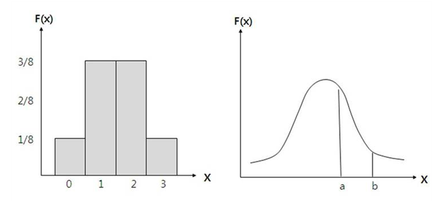

Study
Study list
Research
My Research
연속시간 퓨리에 변환
Continuous-time signal Fourier transform, FT
[퓨리에 변환의 필요성]
지난 시간까지, 퓨리에 급수와 계수를 오일러의 공식을 차용하여 자연지수함수의 복소형식으로 식을 간결하게 압축 하였습니다.
여지껏 우리가 퓨리에의 급수와 계수를 수학적으로 조작한 것은, 파동이 주기적일 경우에만 해당합니다.
그렇다면 비주기 파동에는 과연 어떨까요?
일반적으로 퓨리에 변환이 중요한 이유 중 하나가 주기와 비주기 파동을 모두 아울러 사용하기 때문입니다.
먼저 자연지수함수의 복소형식으로 변환된 퓨리에 급수와 계수부터 시작해 보겠습니다.
결론부터 말씀드리면, 지금부터 우리는 시간영역에서 임의의 파동을 주파수 영역의 이산적인 스펙트럼으로 합성주파수들의 분포로 나타낼 것입니다.
위의 식에서 주파수와 진폭을 알아냈다고 가정하고, 그림으로 표현하면, 아주 듬성듬성한 이산적으로 그려질 것입니다.
따라서 주기가 없는 파동을 해석 할 때, 위와 같은 기존의 퓨리에 급수와 계수는 무용지물이 되고 맙니다.
그렇기 때문에 비주기 파동을 해석하는 수학적 툴이 필요하게 됩니다.
우리는 이것을 퓨리에 변환이라고 부릅니다.
[퓨리에 변환이란???]
앞서 말했듯이, 주기신호 뿐만 아니라 비주기신호까지 통합하여 파동을 해석 가능하도록 돕는 것이 퓨리에 변환입니다.
시간영역에서 주파수영역으로 파동을 해석하는 것이 퓨리에 변환, 반대로 주파수영역에서 시간영역으로 파동을 해석하는 것을 역퓨리에 변환이라고 합니다.
수학적으로 “주기가 없다”라는 말은 재해석하자면, 주기가 무한대임을 뜻한다고 봐도 무방한데, 즉, 비주기나 무한대의 주기신호는 공학적으로 동일한 말입니다.
따라서, 비주기 = 무한대의 주기신호
결국 주기는 주파수와 연관성이 높기 때문에(예, 주파수=주기의 역) 주기가 무한대가 된다면, 우리는 주파수에 관심을 두어야만 합니다.
퓨리에는 각기 다른 진폭이 다른 사인과 코사인으로 쪼갤 수 있다는 것이 주된 개념이었고, 특히 합성된 주파수가 기본주파수, 제2고조파,...,N고조파로 이루어질 때 만약 N도 무한대로 간다면 주파수가 0이 되지 않는 것이 중요합니다.
즉, 기본주파수도 역시 주기가 무한대이기 때문에 주파수 값은 0은 아니지만 0에 가깝게 처리됩니다.
그러면 제2고조파,..N고조파는 기본주파수의 정수배 되기 때문에 기본주파수처럼 결국 0에 가까워지고, 결국 0에 정수배를 한들 거기서 거기일 것입니다.
이것이 바로 퓨리에 급수와 계수를 비주기 파동에 적용하는 요점이 됩니다.
따라서 간격이 극히 좁은(간격이 거의 0에 가까운) 주파수들을 무한대로 쫙 펼쳐놓으면 몇 번째고주파라는 N의 의미는 사라지고 연속적인 계수가 나타날 수밖에 없습니다.

그렇기 때문에 위의 그림을 보면 이산적인 것이 연속적인 것으로 변했습니다.
즉, 퓨리에 변환은 이산적인 계수들을 연속적으로 밀도있게 표현가능한 방식입니다.
[정리]
정리하자면,
1. 푸리에는 비주기 신호 = 무한한 주기를 가진 주기신호와 같습니다.
2. 주기신호를 푸리에 급수로 표현한 경우, 주기가 증가함에 따라 기본 주파수는 감소하고 고조파적으로 연관된 요소들은 주파수 영역에서 점점 더 근접하게 됩니다.
3. 주기가 무한대에 가까워짐에 따라 고조파적으로 연관된 주파수 요소들은 연속성을 이루고 푸리에 급수의 합은 적분이 됩니다.
[비주기 신호의 표현: 연속시간 푸리에 변환]
그럼 퓨리에 변환의 기본 내용을 알았으니, 이를 수식으로 정리해 보겠습니다.
복소형식으로 된 퓨리에 계수에 주파수가 무한대일 경우, 주기가 무한대이기 때문에 정적분의 구간을 마이너스 무한대에서 무한대로 놓고, 주파수 w를 w=2*pi*f*n 으로 변경시켜 봅니다.
그리고 연속적인 구간이 되므로 주파수는 하나로 뭉뚱그려 f로 놓으면 w=2*pi*f으로 대치가능 합니다.
얼추 퓨리에 변환식과 엇비슷하지만 df가 홀로 있기 때문에 이상한 모양이 됩니다...
그렇다면 복소형식의 퓨리에 급수로 생각해봅시다.
여기서 Cn대신 위의 급수식을 넣어보면 형태를 갖추기 위해 주기를 무한대로 하는 기호를 삽입합니다.
결국 식을 정리해보면,
계속해서 강조하지만 w=2*pi*f와 혼용해서 사용할 수 있기 때문에 위의 모습처럼 역퓨리에 변환의 모습이 되고 결국 두 식은 같습니다.
또한 수학적 기호 i는 전자공학에서 교류전자와 헷갈리므로 j로 바꾸어 씁니다. 즉, 식별을 위해 i대신 j를 쓰는데 결국 여기서 i나 j는 동일한 의미입니다.
[정리]
정리하자면,
우리가 시간영역에서의 함수 그래프를 퓨리에 변환을 이용하여 주파수 영역으로 옮길 때, x축의 주파수 영역은 주로 f나 각속도 w로 기입하게 되는데 가리키는 의미는 동일한 것입니다.
w가 익숙지 않으면 그저 주파수로 생각해 줘도 무방합니다.
경우에 따라서 역퓨리에 변환식이 다르게 차용되므로 헤갈려 하지말아야 겠습니다.
[퓨리에 변환 예제와 sinc함수]
지금부터 통신이론 교과서에 자주 나오는 sinc함수와 함께 퓨리에 변환을 살펴보겠습니다.
사실 퓨리에 변환 문제를 어떻게 해결하느냐보다 sinc함수에 초점을 둔 다음과 같은 예제가 있습니다.
아래 그림과 같은 파형을 시간영역에서 주파수 영역으로 변환하는 퓨리에 변환을 해봅시다.
일단 정적분의 영역은 -T~T까지이며 회전연산자는 수학적 기호 i는 전자공학에서 교류전류와 헷갈리므로 j와 바꾸어 사용하겠습니다.

자연지수함수를 사인함수로 만들기 위해 분모와 분자에 2를 곱합니다.
사인함수가 자연지수함수 꼴로 바뀔수 있는 것을 증명했으므로 퓨리에 변환식은 다음과 같습니다.
이제 여기에 sinc(cardinal sine)함수를 도입해 보겠습니다.
그렇다면 이 sinc함수의 역변환은 어떨까요?
그래프를 보니 pi*x=0이 될 때, sinc함수값이 1이 되었습니다.
결국, 주파수= pi/주기 입니다.
따라서 기본주파수에 주기가 늘어난다면? 짜부러진 그래프의 모양이 될 것입니다.
예를 들어, 만약 주기가 없는 상수만의 그래프를 주파수 영역으로 옮긴다면 어떻게 될까요?
답은 주파수는 없고 크기는 무한대인 impulse 형태로 나올 것입니다.